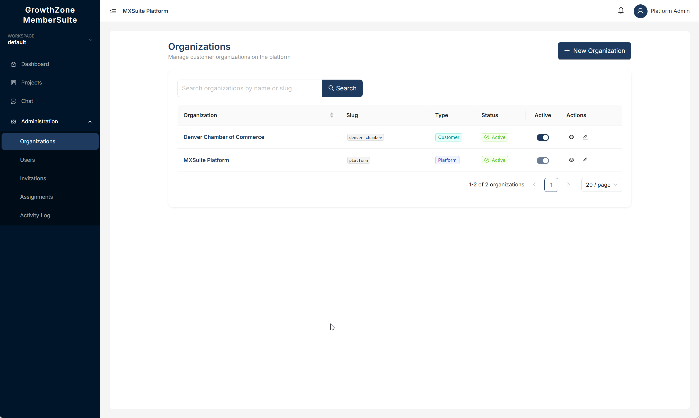
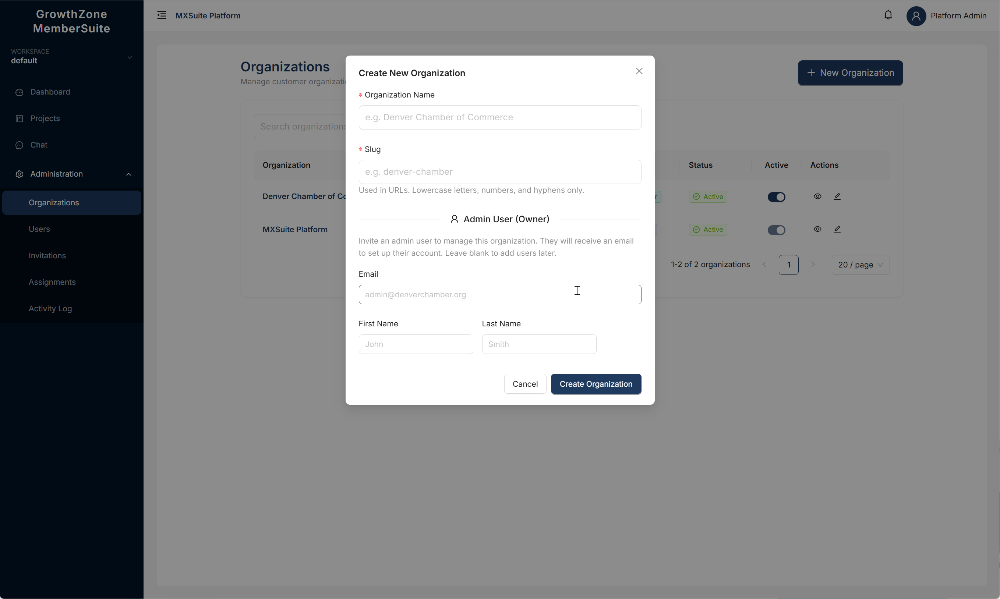
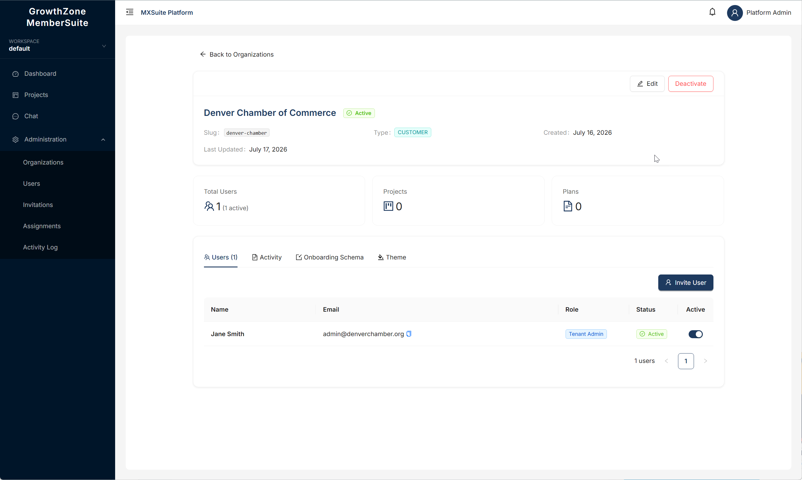
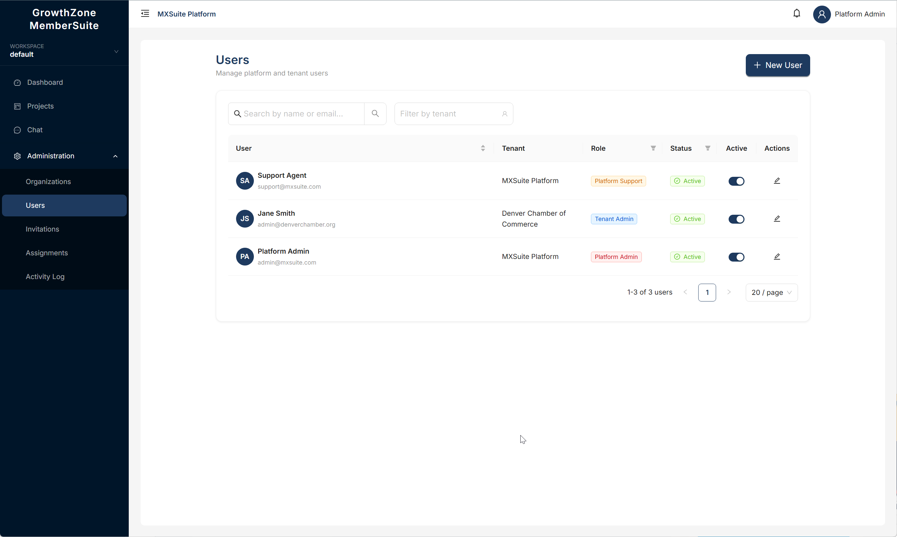
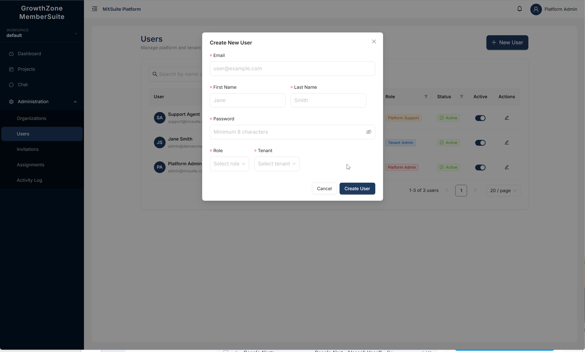
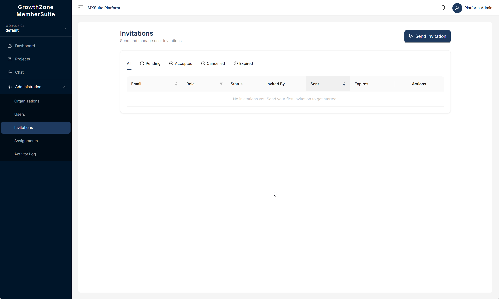
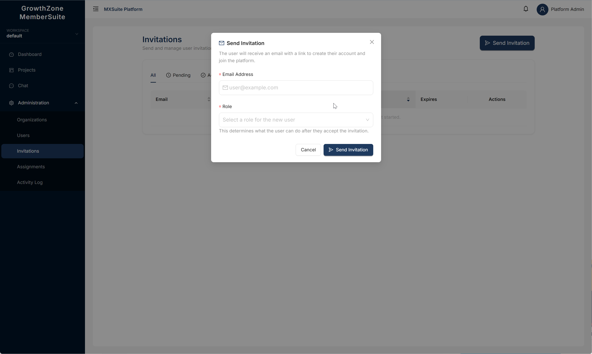
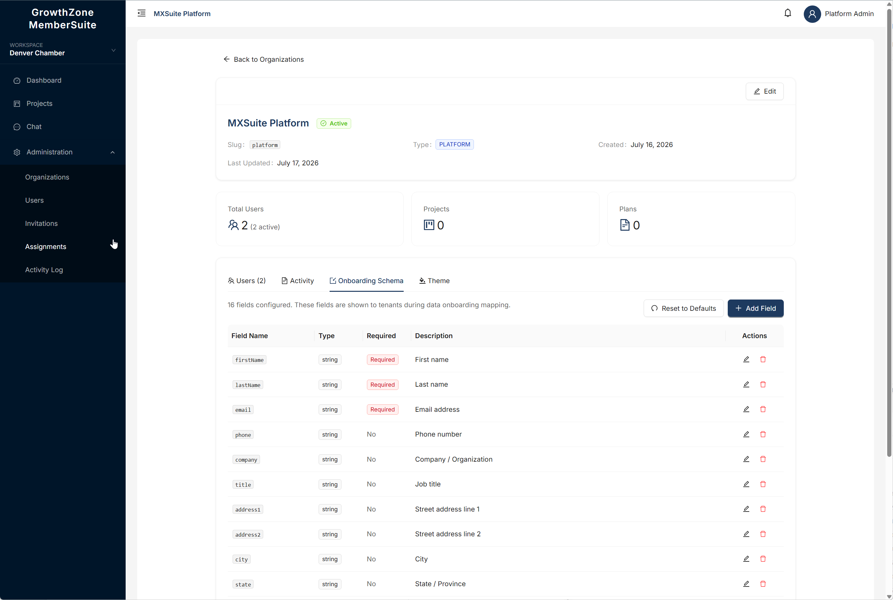
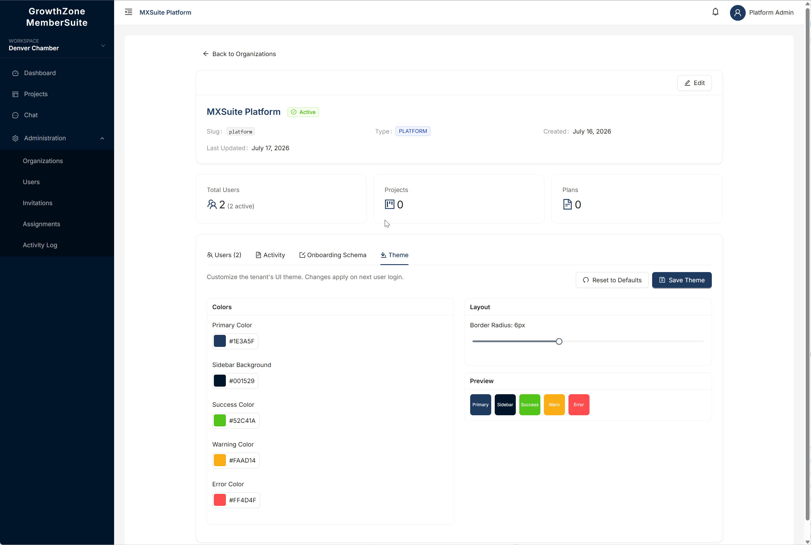
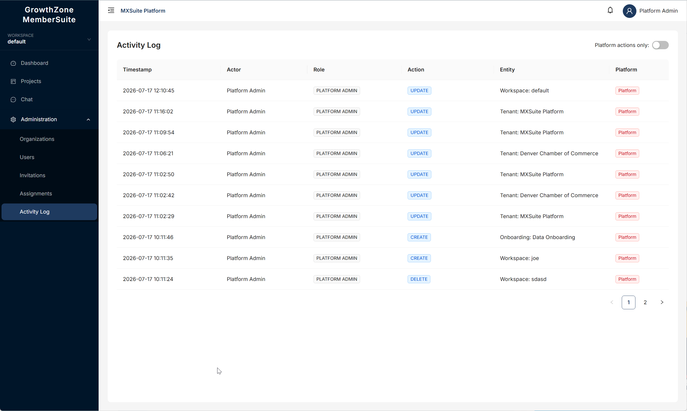

This guide is for Platform Administrators and Platform Support users who manage the GrowthZone MemberSuite platform. It covers every administration feature available in the platform, including organization management, user management, invitations, branding, onboarding configuration, theme customization, and activity monitoring.
GrowthZone MemberSuite is a multi-tenant data onboarding platform. Each customer organization (called a tenant) has its own isolated set of users, workspaces, projects, data files, and transformation plans. As a Platform Administrator, you oversee all of these organizations from a single administration interface.
There are two platform-level roles. Both have access to the Administration menu in the sidebar, but their permissions differ:
| Role | Permissions | Typical User |
|---|---|---|
| Platform Admin |
Full read/write access to all administration features:
|
GrowthZone internal team leads and administrators |
| Platform Support |
Read access to most administration areas plus the ability to assist customers:
|
GrowthZone support staff assigned to help customers |
When logged in as a Platform Admin or Platform Support user, you will see an Administration section in the sidebar menu. This section contains the following sub-items:
| Menu Item | What It Does |
|---|---|
| Organizations | Manage all customer organizations on the platform. Create, edit, search, and activate/deactivate organizations. |
| Users | View and manage user accounts across all organizations. Create users, edit roles, and toggle active status. |
| Invitations | Manage all invitation emails sent across the platform. Send new invitations, resend expired ones, or cancel pending invitations. |
| Activity | View a read-only audit trail of all actions performed on the platform. |

The Administration menu in the sidebar expands to show Organizations, Users, Invitations, Assignments, and Activity Log.
In addition to the Administration section, platform users also have access to the standard menu items: Dashboard, Workspaces, Projects, and Settings.
Organizations (also called tenants) are the top-level containers in GrowthZone MemberSuite. Each customer organization has its own isolated set of users, data, and configuration. As a Platform Administrator, you create and manage these organizations.
Navigate to Administration → Organizations to see the full list of organizations on the platform.
The Organizations page lists all organizations with their slug, type, status, active toggle, and action icons.
The organization list shows the following columns:
| Column | Description |
|---|---|
| Organization | The display name of the organization. Inactive organizations show a red badge. |
| Slug | The unique URL-safe identifier for the organization (e.g., denver-chamber). |
| Type | Either Platform (the GrowthZone platform organization) or Customer (a customer organization). |
| Status | Shows Active or Inactive with an icon. |
| Active | A toggle switch to quickly activate or deactivate the organization. |
| Actions | View details (eye icon) and Edit (pencil icon). |
Use the search bar at the top of the list to find organizations by name or slug. Type your search term and press Enter or click the Search button. To clear the search, click the X in the search field.
The list shows 20 organizations per page by default. You can change this to 10 or 50 using the page size selector at the bottom of the table. Navigate between pages using the pagination controls.
To create a new customer organization:
Click the blue New Organization button in the top-right corner of the Organizations page. A modal dialog will appear.
Type the full name of the organization (e.g., "Denver Chamber of Commerce"). This name is displayed throughout the platform.
A URL-safe slug is automatically generated from the name (e.g., "denver-chamber-of-commerce"). You can edit it if needed. The slug must contain only lowercase letters, numbers, and hyphens.
The organization is created and appears in the list immediately. It is active by default.

The Create New Organization modal with Organization Name and Slug fields.
When creating an organization, you can optionally invite an admin user (the owner) at the same time. This is the recommended approach because it sends an invitation email to the owner, allowing them to set up their own password and start managing their organization immediately.
Follow the same steps as creating a basic organization (see above).
Below the slug field, you will see a section titled Admin User (Owner) with three fields:
The organization is created and an invitation email is sent to the admin. You will see a confirmation message: "Organization created — invitation sent to [email]."
The Admin User (Owner) section appears below the Organization Name and Slug. Fill in the Email, First Name, and Last Name to invite an admin when the organization is created.
To edit an organization's details:
In the organization list, click the pencil icon (Edit) in the Actions column for the organization you want to modify.
You can change the Organization Name and Slug. For the Platform organization (type = Platform), you will also see a Brand Name field — see Section 7: Platform Branding for details.
Your changes are saved immediately.

The Organization detail page shows the organization header with Edit and Deactivate buttons, stats cards, and tabs for Users, Activity, Onboarding Schema, and Theme.
You can activate or deactivate customer organizations using the toggle switch in the Active column of the organization list.
| Action | What Happens |
|---|---|
| Deactivate | All users in the organization immediately lose access. They will see an "organization inactive" message if they try to log in. No data is deleted. |
| Activate | All existing users regain access immediately. All data, projects, and plans are preserved. |
When you click the toggle, a confirmation dialog appears asking you to confirm the action. For deactivation, the dialog warns that all users under this organization will lose access.
Click the eye icon (View details) in the organization list to open the full detail page for an organization. This page provides a comprehensive view of the organization with multiple tabs:
The top of the page shows the organization's name, slug, type, status, and creation/modification timestamps. It includes an Edit button and an Activate/Deactivate toggle.
Below the information card, three statistic cards show:
The Organization Detail page for Denver Chamber of Commerce showing Total Users, Projects, Plans stats and the Users tab with an Invite User button.
Shows a table of all users belonging to this organization. You can:
Shows the audit log filtered to this organization. Each entry includes a timestamp, actor, action, entity, and a platform indicator. Click a row to see the full event details including before/after state (where applicable).
Configure the data collection fields for this organization's onboarding process. See Section 8: Onboarding Schema for details.
Customize the UI colors and appearance for this organization. See Section 9: Theme Customization for details.
The Users page gives you a centralized view of every user account across all organizations on the platform. Navigate to Administration → Users.

The Users page shows all users across organizations with name, tenant, role, status, active toggle, and edit actions.
The user list shows the following columns:
| Column | Description |
|---|---|
| Name | The user's full name with their avatar (initials or uploaded photo). |
| The user's email address (used for login). | |
| Role | The user's role: Platform Admin, Platform Support, Tenant Admin, or Tenant User. |
| Organization | The organization the user belongs to. |
| Status | Active or Inactive. |
| Actions | Edit and Activate/Deactivate. |
You can filter the user list by:
To create a user account directly (without sending an invitation):
Click the button in the top-right corner of the Users page.
Email: The user's email address (must be unique across the platform).
First Name and Last Name: The user's display name.
Password: Must be at least 8 characters with at least one uppercase letter, one lowercase
letter, one digit, and one special character.
Role: Select the appropriate role (see Section 2).
Organization: Select which organization this user belongs to.
The user account is created immediately and the user can log in right away.

The Create New User modal with Email, First Name, Last Name, Password, Role, and Tenant fields.
Click the Edit icon next to any user to modify their details. You can change:
Toggle a user's active status using the switch in the user list or on the user's detail page. Deactivating a user prevents them from logging in but preserves all of their data, workspaces, and projects.
The invitation system allows you to onboard new users by sending them an email with a secure link to create their account. Navigate to Administration → Invitations.

The Invitations page with All, Pending, Accepted, Cancelled, and Expired status tabs. Click Send Invitation to invite a new user.
The invitation list shows all invitations sent across the platform. You can filter by status using the tabs:
| Status | Icon | Meaning |
|---|---|---|
| Pending | Clock icon | The invitation has been sent but not yet accepted. The link is still active. |
| Accepted | Check icon | The recipient has accepted the invitation and created their account. |
| Cancelled | Close icon | The invitation was manually cancelled by an administrator. The link no longer works. |
| Expired | Warning icon | The invitation expired after 7 days without being accepted. |
Each invitation entry shows:
Click the button in the top-right corner of the Invitations page.
Type the email address of the person you want to invite.
Choose the appropriate role. As a platform administrator, you can assign any role: Platform Admin, Platform Support, Tenant Admin, or Tenant User.
The invitation email is sent immediately. The recipient has 7 days to accept it.

The Send Invitation dialog asks for the Email Address and Role. The role determines what permissions the user will have after they accept.
If a recipient did not receive the original email or if the invitation has expired, you can resend it:
To revoke a pending invitation:
Every invitation goes through a defined lifecycle:
| Stage | Duration | What Happens |
|---|---|---|
| Sent | Immediate | A cryptographically secure token is generated and an email is sent to the recipient with a unique link. |
| Pending | Up to 7 days | The invitation is active and waiting for the recipient to click the link and create their account. |
| Accepted | Permanent | The recipient clicked the link, entered their name and password, and their account was created. |
| Expired | After 7 days | The invitation was not accepted within the 7-day window. Use Resend to send a fresh invitation. |
| Cancelled | Permanent | An administrator manually revoked the invitation. The link no longer works. |
Platform branding controls the product name and logo that appear in two key locations:
Platform branding is managed through the Platform organization (the organization with type = Platform). This is your GrowthZone internal organization.
Open the Organizations list.
Look for the organization with the Platform type badge. This is typically the first entry in the list.
Click the pencil icon in the Actions column. The edit modal will appear with a Brand Name field (this field is only visible for the Platform organization).
Type the product name you want to display (e.g., "GrowthZone MemberSuite"). This name appears in the sidebar for all users and on the login page.
The sidebar updates immediately for the current session. Other users will see the updated name on their next page load or login.
Find the Platform organization in the list and click the edit icon. The Brand Name field appears only for the Platform organization type.
You can upload a logo image for the Platform organization that replaces the text brand name in the sidebar.
Click the eye icon to view the Platform organization's detail page.
In the organization information card, click the logo upload area. Select an image file from your computer. Supported formats: PNG, JPG, SVG, WEBP. Maximum size: 2 MB.
After uploading, the logo appears in the sidebar. When the sidebar is collapsed, the logo scales down automatically.
Each organization has an onboarding schema that defines the data fields collected during the member onboarding process. As a Platform Administrator, you can customize the schema for each organization to match their specific data requirements.
Navigate to Administration → Organizations and click the eye icon for the organization.
You will see the list of data fields configured for this organization's onboarding.

The Onboarding Schema tab displays all configured fields with their Name, Type, Required status, and Description. Use the Add Field button to add custom fields, or Reset to Defaults to restore the standard 16 fields.
When a new organization is created, the system automatically provisions 16 default onboarding fields:
| Field | Type | Required |
|---|---|---|
| firstName | string | Yes |
| lastName | string | Yes |
| string | Yes | |
| phone | string | No |
| company | string | No |
| title | string | No |
| address1, address2, city, state, zip, country | string | No |
| memberType | string | No |
| joinDate, expirationDate | date | No |
| notes | string | No |
For each field, you can configure the following properties:
| Property | Description |
|---|---|
| Name | The field identifier (used internally and in mapping). |
| Type | The data type: string, date, or number. |
| Required | Whether this field must be provided during onboarding. |
| Description | A human-readable description of the field's purpose. |
You can:
Each organization can have a custom color theme applied to their GrowthZone MemberSuite interface. Theme settings are managed from the Theme tab on the Organization Detail page.
Navigate to Administration → Organizations and click the eye icon.
You will see color pickers and sliders for customizing the organization's UI.

The Theme tab lets you customize Primary Color, Sidebar Background, Success/Warning/Error Colors, and Border Radius. A live preview shows the effect of your changes. Click Save Theme to apply.
| Setting | Description | Default |
|---|---|---|
| Primary Color | Used for buttons, links, and accent elements throughout the UI. | #1e3a5f |
| Sidebar Background | The background color of the sidebar navigation. | #001529 |
| Success Color | Used for success messages and indicators. | #52c41a |
| Warning Color | Used for warning messages and indicators. | #faad14 |
| Error Color | Used for error messages and indicators. | #ff4d4f |
| Border Radius | Controls the roundness of UI elements (0px = sharp corners, 16px = very rounded). | 6px |
After making changes, click Save Theme to apply. You can also click Reset to Defaults to restore the standard GrowthZone theme.
The Activity Log provides a complete, read-only audit trail of all actions performed on the platform. Navigate to Administration → Activity.

The Activity Log records every action on the platform with Timestamp, Actor, Role, Action, Entity, and Platform indicator columns.
Every significant action is automatically recorded, including:
| Action | Examples |
|---|---|
| CREATE | New organization, user, project, plan, workspace, or invitation created. |
| UPDATE | Organization name changed, user role modified, plan published, theme updated. |
| DELETE | Project deleted, workspace removed. |
| UPLOAD | Data file uploaded to a project. |
| UPLOAD_LOGO | Organization logo uploaded. |
| PUBLISH | Plan published (moved from Draft to Published status). |
| EXECUTE | Plan run started (Dry Run or Full Run). |
| SHARE | Workspace shared with another user. |
| LOGIN_FAILED | Failed login attempt (recorded with email and IP address). |
Each entry in the log includes:
| Field | Description |
|---|---|
| Timestamp | The exact date and time of the action. |
| Actor | The user who performed the action (name displayed). |
| Role | The role of the user who performed the action. |
| Action | The type of action (CREATE, UPDATE, DELETE, etc.). |
| Entity | What was affected — the entity type (e.g., Tenant, User, Project) and its name. |
| Platform | A badge indicating whether this was a platform-level action. |
Click on any row in the activity log to see the full event details in a modal dialog. The details include:
Use the "Platform actions only" toggle to show only actions performed at the platform level (e.g., organization creation, user role changes) and filter out tenant-level actions (e.g., file uploads, plan runs).
Platform Administrators have access to the workspace management features that all users have, with the addition of being able to see workspaces across all organizations. The workspace selector in the sidebar allows you to switch between your workspaces.
| Action | How | Notes |
|---|---|---|
| Create Workspace | Click the workspace dropdown in the sidebar, then "New Workspace." Enter a name and optional description. | Each workspace starts with zero projects. Add projects after creation. |
| Edit Workspace | Open the workspace dropdown, hover over a workspace, and click the edit icon. | You can change the name and description. |
| Delete Workspace | Open the workspace dropdown, hover over a workspace, and click the delete icon. | You cannot delete a workspace that still contains projects. Move or delete the projects first. |
| Share Workspace | Open a workspace and click "Share." Select a user and choose an access level (Viewer, Editor, Admin). | Shared users can see the workspace and its projects according to their access level. |
| Location | Path |
|---|---|
| Organizations List | Sidebar → Administration → Organizations |
| Organization Detail | Organizations list → Eye icon on any row |
| Users List | Sidebar → Administration → Users |
| Invitations List | Sidebar → Administration → Invitations |
| Activity Log | Sidebar → Administration → Activity |
| Platform Branding | Organizations → Edit the Platform organization → Brand Name field |
| Onboarding Schema | Organization Detail → Onboarding Schema tab |
| Theme Settings | Organization Detail → Theme tab |
| Logo Upload | Organization Detail → Logo section in info card |
| Task | Steps |
|---|---|
| Onboard a new customer | 1. Create organization (with admin owner) → 2. Owner accepts invitation → 3. Owner invites their team members → 4. Configure onboarding schema if needed |
| Change the sidebar product name | Organizations → Edit Platform org → Update Brand Name → Save |
| Temporarily disable a customer | Organizations → Toggle the Active switch off for the customer org |
| Revoke a user's access | Users → Find the user → Toggle the Active switch off |
| Resend an expired invitation | Invitations → Find the invitation → Click Resend |
| Investigate suspicious activity | Activity → Toggle "Platform actions only" off → Browse events by timestamp |
| Customize a customer's theme | Organizations → View detail → Theme tab → Adjust colors → Save |
| Feature | Detail |
|---|---|
| Password Requirements | Minimum 8 characters, at least one uppercase, one lowercase, one digit, and one special character. |
| Account Lockout | After 5 failed login attempts, the account is locked for 15 minutes. |
| Invitation Tokens | Cryptographically secure (32-byte SecureRandom, URL-safe Base64). Valid for 7 days. |
| Session Tokens | JWT-based authentication. Tokens are stored in localStorage. |
| Audit Trail | All actions logged immutably. Includes actor, timestamp, entity, action, and IP address for login events. |
| Tenant Isolation | All data queries are scoped to the user's tenant. Platform users can access cross-tenant data through the admin interface only. |